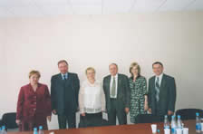

Семинар-совещание представителей акционерных обществ работников (народных предприятий) 17-18 ноября 2015г (Программа | Решение)
| Период времени | Главная проблема семинара-совещания | Обсуждаемые проблемы | Приглашенные участники | |
| Ноябрь 2004г. | «Экономический потенциал акционерной собственности работников» Создание САОР. : Обсуждение и подписание учредительных документов |
1. Опыт организации и этапы развития ЗАОр(НП) «Туринский ЦБЗ». 2. Способы оценки акций ЗАОр(НП) «Туринский ЦБЗ». 3. Система оплаты труда работников-акционеров. |
Ген.директора ЗАОр(НП), начальники экономических служб предприятий. | |
| Февраль 2005г. | «Уральский опыт организации и деятельности акционерного общества работников (народного предприятия). ЗАОр как эффективная форма организации производства» | 1. Организация и развитие ЗАОр(НП) «Сухоложскасбоцемент». 2. Формы стимулирования работников-акционеров на предприятии. 3. Особенности организации труда на предприятии с повышенной вредностью. |
Ген.директора ЗАОр(НП), начальники экономических служб предприятий. | |
| Март 2005г. | Заседание круглого стола «Акционерные общества работников (народные предприятия) в системе АПК Свердловской области» | 1. «Особенности формирования и развития сельскохозяйственных ЗАОр (народных предприятий). | Д.э.н. Лукиных М.И., проректор по научной работе Уральской государственной cельскохозяйственной Академии, профессорско-преподавательский состав, студенты. Ген.директора ЗАОр(НП). |
|
| Ноябрь 2005г. | «Механизмы участия работников в управлении» | 1. «Использование новейших технологий в сельском хозяйстве. Биогаз -перспективное направление энергосбережения». 2. «Современные направления повышения продуктивности животноводства». |
К.т.н., доцент кафедры атомной физики УГТУ-УПИ Велькин В.И. Д.с, профессор УГСА Глухих В.Л. |
|
| Апрель 2006г. | «Кадровая политика: особенности функционирования современных кадровых служб предприятия». «Биодобавки как направление повышения экономической эффективности производства молока» | 1. Практика формирования стабильного коллектива. 2. О формах взаимодействия ЗАОр (народных предприятий) с предприятиями иных форм собственности Туринского района. |
К.с.н., Вдовин О.Н., руководитель отдела животноводства ЗАО «УРАЛБИОВЕТ» Плахотник А. |  |
| Март 2007г. | «Развитие лизинга в деятельности промышленных и сельскохозяйственных предприятий Свердловской области» | 1. Опыт использования лизинговых отношений ЗАОр (НП) Туринский ЦБЗ. 2. Возможности использования лизинга на предприятиях перерабатывающей промышленности. |
Зам.начальника коммерческого отдела компании «Лизинг-он-лайн» Ермаков Р.В., Ген.директор государственного унитарного предприятия Свердловской области «Уралагроснабкомплект» Рублев А.Н., заместительГен.директора по коммерции ОАО «Молоко» (г.Каменск-Уральский» Ермакова Е.А. | |
| Декабрь 2007г. | «Итоги и проблемы развития ЗАОр» | 1. Психологический потенциал руководителя в практике общения и взаимодействия: теория и практика. | К.п.н., доцент УрГУ им. А.М.Горького Касатов А.П. | |
| Июнь 2008г. | «Направления повышения производительности труда в деятельности акционерных обществ работников (народных предприятий)» | 1. Акционерные общества работников как направление развития многоукладной экономики России. 2. Опыт работы ЗАОр в направлении повышения производительности труда. |
Д.э.н., заслуженный экономист, зам.директора Института труда и социального развития РФ (г. Москва) Куликов В.В. | |
| Май 2009г. | «Собственность работников: десять лет развития» | 1. Проблемы и перспективы развития собственности работников в РФ. 2. Мировой опыт развития собственности персонала в развитых странах. |
Депутат Государственной Думы РФ от фракции «Справедливая Россия», председатель подкомитета по технологическому развитию И. Пономарев | |
| Ноябрь 2010г. | «Собственность работников: актуальные вопросы развития акционерных обществ работников (народных предприятий)» | «Экономико-правовые проблемы развития ЗАОр» - отчет о проделанных мероприятиях в соответствии с Решениями от 15-16 февраля 2010г. Подробная программа семинара |
Ген.директора ЗАОр(НП) "Жуковмежрайгаз" Дюков А.А. "Архангельскхлеб" Подколзин С.Н. |
|
| Май 2011г. | Участники семинара Задирака Г.Н. ЗАО «НП Сухоложскасбоцемент», Председатель Правления СНПУ |
|||